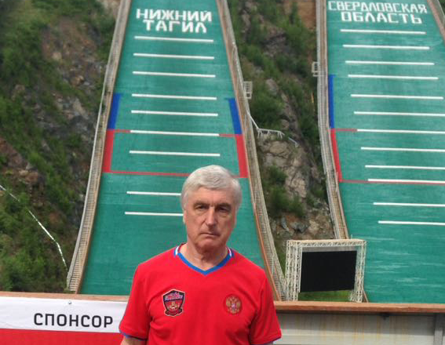
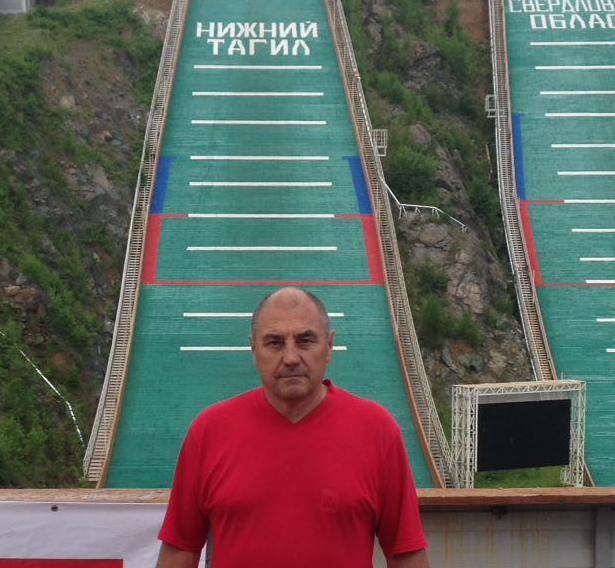

Старшие тренеры
Владислав Николаевич Рожок
Вице – президент Свердловской Областной Общественной организации «Федерация по прыжкам на лыжах с трамплина и лыжному двоеборью» (г. Екатеринбург).
Тренер по олимпийскому виду спорта лыжное двоеборье
Занимается подготовкой спортсменов в этой дисциплине с 1982г., имеет высшее образование в сфере физической культуры и спорта.
При подготовке спортсменов высокой квалификации использовал методику обучения собственной разработки, включающую курс лекций и практические занятия.
В 1990-1991 годах был тренером сборной молодежной команды СССР.
- Его ученики:
- С. Фофанов, А. Фалалеев - члены сборной команды страны, победители, и призеры первенств СССР (1990-1991гг.);
- А. Рожок - член сборной России, призер первенства России (1992г.);
- А. Антропов - член сборной России, обладатель Кубка России (1994г.);
- Д. Синицын, МСМК - член сборной команды России, бронзовый призёр чемпионата мира, участник Олимпийских игр в Нагано (Япония);
- А. Носков, А. Баров, М. Богомягков - победители первенств России (1994-1996гг.);
- А. Цветков - многократный чемпион и призер всероссийских первенств, участник Олимпийских игр в Солт-Лейк-Сити (1996-1997гг.).
В настоящий момент принимает активное участие в работе областной федерации по лыжному двоеборью и занимается подготовкой юных спортсменов.
За подготовку выдающихся спортсменов, добившихся успехов на международном уровне, удостоен почётного звания «Заслуженный тренер России».
Награждён нагрудным знаком «Отличник физической культуры и спорта».
Леонид Владимирович Головырских
Старший тренер сборной команды Свердловской области по лыжному двоеборью.
Имеет высшее физкультурное образование.
Неоднократно принимал участие в различных чемпионатах СССР, РСФСР, зимних студенческих всесоюзных играх.
Работал со сборной командой СССР, (1981-1982гг., 1990-1991гг.) и со сборной командой юниоров СССР, (1988-1990гг.).
- За время своей деятельности подготовил целый ряд известных спортсменов:
- С. Шориков - мастер спорта, призер первенства мира (1981г.), чемпион СССР, (1983);
- А. Коношенко - мастера спорта, участник чемпионата мира (1981г.), чемпион СССР (1983г.);
- П. Шилков - мастера спорта, участник чемпионата мира среди юниоров (1982г.);
- С. Швагирев - мастера спорта, чемпион России (1993г.), участник Олимпийских игр (1992г.);
- А. Антропов - мастер спорта, чемпион России (1993г.);
- Д. Синицын - мастер спорта международного класса, участник Олимпийских игр (1998г.), призер чемпионата мира (1999г.);
- Мастиев Самир Окумали – Оглы - мастер спорта, член сборной команды России по лыжному двоеборью, призер зимней Универсиады 2017г.в г. Алматы, кандидат на участие в Олимпийских играх в Корее (2018г);
- М. Кипин - мастер спорта, член сборной команды России по лыжному двоеборью, участник чемпионата России (2016г., 6 место).
Леонид Владимирович - Заслуженный тренер РСФСР (1983г.), в 1998г. был удостоен нагрудного знака «За заслуги в развитии физической культуры и спорта».
В настоящее время занимается подготовкой спортсменов сборной команды Свердловской области по лыжному двоеборью.
Также занимает пост директора физкультурно-спортивного лыжного клуба «Динамо» в Екатеринбурге.